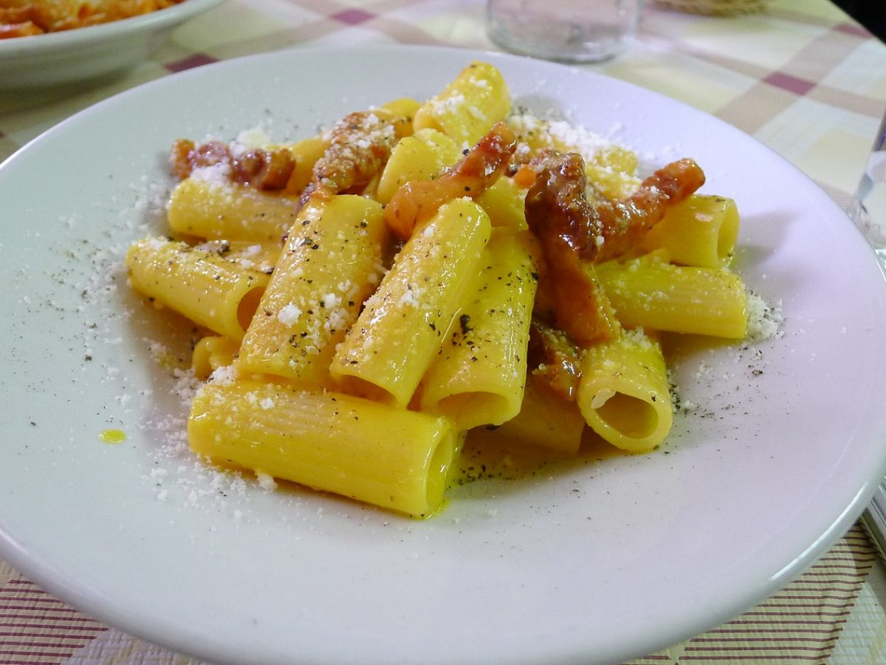

Per quanto riguarda le circostanze della nascita di questo piatto, è plausibile che la disponibilità delle razioni militari statunitensi nell'immediato dopoguerra abbia fornito l'impulso decisivo per la costruzione della ricetta. La combinazione del tipico gusto americano uova & bacon con la pasta condita con il formaggio ne ha decretato l'immediata fortuna su entrambe le sponde dell'Oceano Atlantico. Ma a chi dobbiamo questa invenzione? Le ipotesi sono diverse, ma su tutte prevale il racconto, mai smentito, di Renato Gualandi. Questo giovane cuoco di origine bolognese fu ingaggiato il 22 settembre 1944 per preparare un pranzo in occasione dell’incontro tra l’Ottava Armata inglese e la Quinta Armata americana nella Riccione appena liberata. Facendo di necessità virtù, creò inconsapevolmente un piatto destinato a diventare famoso in tutto il mondo: “Gli americani avevano del bacon fantastico, della crema di latte buonissima, del formaggio e della polvere di rosso d’uovo. Misi tutto insieme e servii a cena questa pasta ai generali e agli ufficiali. All’ultimo momento decisi di mettere del pepe nero che sprigionò un ottimo sapore. 
Taglia il guanciale a listarelle, spesse circa mezzo centimetro, e fallo rosolare in padella a fuoco dolce, senza aggiungere grassi.
Quando avrà rilasciato gran parte del grasso e sarà quindi croccante, spegni la fiamma.
Lessa i rigatoni in abbondante acqua, leggermente salata.
Nel frattempo, in una ciotola sbatti i tuorli con il formaggio pecorino e un po' di pepe nero macinato.
Il risultato sarà una salsa piuttosto densa alla quale andrai ad aggiungere un cucchiaio del grasso del guanciale sciolto e un goccio di acqua di cottura della pasta (avendo cura di lasciarla prima raffreddare un po’).
Scola la pasta al dente e saltala in padella per qualche minuto con il guanciale e mezzo mestolo di acqua di cottura della pasta.
Spegni, togli la padella dal fornello e aggiungi la crema di tuorli e pecorino.
Mescola velocemente, aggiungi un’altra spolverata di pecorino e pepe e... divorala!
CONSIGLI: se la crema dovesse risultare troppo densa, aggiungi un goccino d’acqua di cottura nella fase della mantecatura, ma assicurati che non sia bollente altrimenti farai una bella frittata!